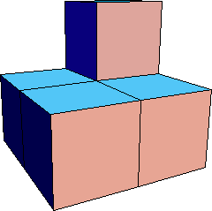
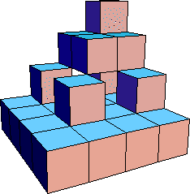
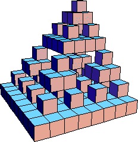
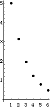

Block Fractals
Exercises - Five Block Configuration Volume
Here we compute the volume of the four cube configuration by finding a pattern in the volumes
of the first few levels of the construction.
|  |
 |
 |
| Level 1 |
Level 2 |
Level 3 |
| Level | Side Length | Number of Cubes | Cube Volume | Total Volume |
| 1 | 1 | 5 | 1 |
V1 = 5*1 |
| 2 | 1/2 | 52 |
(1/2)3 = 1/8 | V2 = 52*(1/8) |
| 3 | 1/4 | 53 |
(1/4)3 = (1/8)2 |
V3 = 53*(1/8)2 |
| ... | ... | ... |
... | ... |
| n | 1/2n-1 | 5n |
(1/2n-1)3 = (1/8)n-1 |
Vn = 5n*(1/8)n-1 = 5*(5/8)n-1 |
|
 |
 |
| | Total Vol vs level |
Because Vn = 5*(5/8)n-1 -> 0 as n -> infinity, the limiting shape has zero volume.
Return to exercises.